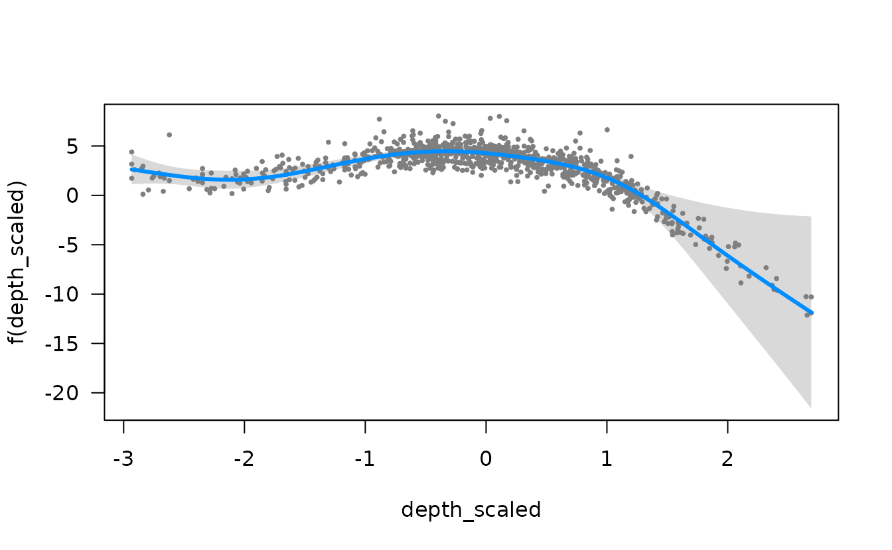
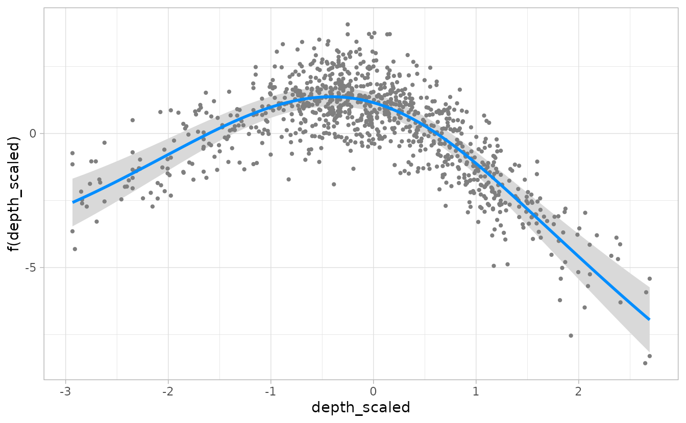

Visualizing sdmTMB conditional effects using visreg
Julia Indivero, Sean Anderson, Lewis Barnett, Philina English, Eric Ward
2025-11-22
Source:vignettes/articles/visreg.Rmd
visreg.RmdIf the code in this vignette has not been evaluated, a rendered version is available on the documentation site under ‘Articles’.
We can use the visreg package to visually inspect the conditional effects of explanatory variables in sdmTMB models.
We will use the built-in Pacific cod survey data for this example. We will fit a model with scaled depth and a factor effect of year using a Tweedie distribution.
pcod_2011$fyear <- as.factor(pcod_2011$year)
mesh <- make_mesh(pcod_2011, c("X", "Y"), cutoff = 20)
fit <- sdmTMB(
density ~ 0 + s(depth_scaled) + fyear,
data = pcod_2011,
mesh = mesh,
spatial = "off", # off for vignette building speed
family = tweedie(link = "log")
)We can then plot the effect of depth in link space. This shows the value of depth on the x-axis and the change in response on the y-axis, holding all other variables constant.
visreg(fit, xvar = "depth_scaled")
Note that by default, randomized quantile residuals are included.
These should be normally distributed in link space if the model is
consistent with the data. These can be turned off with
partial = FALSE
The default, a visreg plot uses base graphics. We can set
gg = TRUE to get a ggplot version:
g <- visreg(fit, xvar = "depth_scaled", gg = TRUE)
#> Warning: `aes_string()` was deprecated in ggplot2 3.0.0.
#> ℹ Please use tidy evaluation idioms with `aes()`.
#> ℹ See also `vignette("ggplot2-in-packages")` for more information.
#> ℹ The deprecated feature was likely used in the visreg package.
#> Please report the issue at <https://github.com/pbreheny/visreg/issues>.
#> This warning is displayed once every 8 hours.
#> Call `lifecycle::last_lifecycle_warnings()` to see where this warning was
#> generated.
#> Warning: Using `size` aesthetic for lines was deprecated in ggplot2 3.4.0.
#> ℹ Please use `linewidth` instead.
#> ℹ The deprecated feature was likely used in the ggplot2 package.
#> Please report the issue at <https://github.com/tidyverse/ggplot2/issues>.
#> This warning is displayed once every 8 hours.
#> Call `lifecycle::last_lifecycle_warnings()` to see where this warning was
#> generated.
g + xlab("Depth scaled")
We can also grab the underlying data it creates and make our own plot:
d <- visreg(fit, xvar = "depth_scaled", plot = FALSE)
head(d$fit)
#> depth_scaled fyear density visregFit visregLwr visregUpr
#> 1 -2.933490 2011 0 2.629110 1.122039 4.136182
#> 2 -2.877239 2011 0 2.524430 1.158455 3.890404
#> 3 -2.820988 2011 0 2.420118 1.185481 3.654756
#> 4 -2.764737 2011 0 2.316778 1.200202 3.433355
#> 5 -2.708486 2011 0 2.215283 1.199395 3.231171
#> 6 -2.652235 2011 0 2.116733 1.180157 3.053310
g <- ggplot(d$fit, aes(x = depth_scaled, y = visregFit)) +
geom_line() +
geom_ribbon(aes(ymin = visregLwr, ymax = visregUpr), alpha = 0.5)
# residuals are in d$res
head(d$res)
#> depth_scaled fyear density visregRes visregPos
#> 1 0.7408840 2011 0 5.633490 TRUE
#> 2 -2.7062455 2011 0 2.135630 FALSE
#> 3 -2.9334899 2011 0 2.532105 FALSE
#> 4 -0.2224156 2011 0 1.894249 FALSE
#> 5 1.8685071 2011 0 -4.864248 TRUE
#> 6 2.3175211 2011 0 -8.423270 TRUE
g + geom_point(aes(y = visregRes), data = d$res, size = 1, alpha = 0.4)
We can look at the effect of depth in each year separately, either in separate plots or overlaid on the same plot.
visreg(fit, xvar = "depth_scaled", by = "fyear", gg = TRUE)
visreg(fit, xvar = "depth_scaled", by = "fyear", overlay = TRUE, gg = TRUE)
And at the effect of depth on the response scale, rather than link (log) scale.
visreg(fit, xvar = "depth_scaled", scale = "response")
In this case, visreg adds “rug” lines indicating the where the data were observed along the x-axis variable.
visreg() can also be used to visualize just the
categorical effect of year.
visreg(fit, xvar = "fyear")
We can also simultaneously compare both depth and year with a two-dimensional contour plot.
visreg2d(fit, xvar = "fyear", yvar = "depth_scaled")visreg2d() is different from visreg() in
that it doesn’t take a gg argument. Instead, it takes
plot.type = c("image", "persp", "rgl", "gg"). For
example:
visreg2d(fit, xvar = "fyear", yvar = "depth_scaled", plot.type = "gg")
visreg2d(fit, xvar = "fyear", yvar = "depth_scaled", plot.type = "persp")
Delta models
visreg() can also be used to plot the output of delta
models from sdmTMB() by using similar code for the previous
plots, but using the sdmTMB wrapper function visreg_delta()
and specifying model = 1 for the encounter (0 vs. non-zero)
model or model = 2 for the positive component model (e.g.,
Gamma, lognormal). For example:
fit_dg <- sdmTMB(
density ~ s(depth_scaled, year, k = 8),
data = pcod_2011,
mesh = pcod_mesh_2011,
spatial = "off", # for vignette speed
family = delta_gamma()
)
visreg_delta(fit_dg, xvar = "depth_scaled", model = 1, gg = TRUE)
#> These are residuals for delta model component 1. Use the `model` argument to
#> select the other component.
visreg_delta(fit_dg, xvar = "depth_scaled", model = 2, gg = TRUE)
#> These are residuals for delta model component 2. Use the `model` argument to
#> select the other component.
Note that for plotting with visreg_delta(), categorical
variables like year need to be designated as a factor in the data frame,
as in the example above with fyear, rather than in the
model formula (e.g., + as.factor(year)).